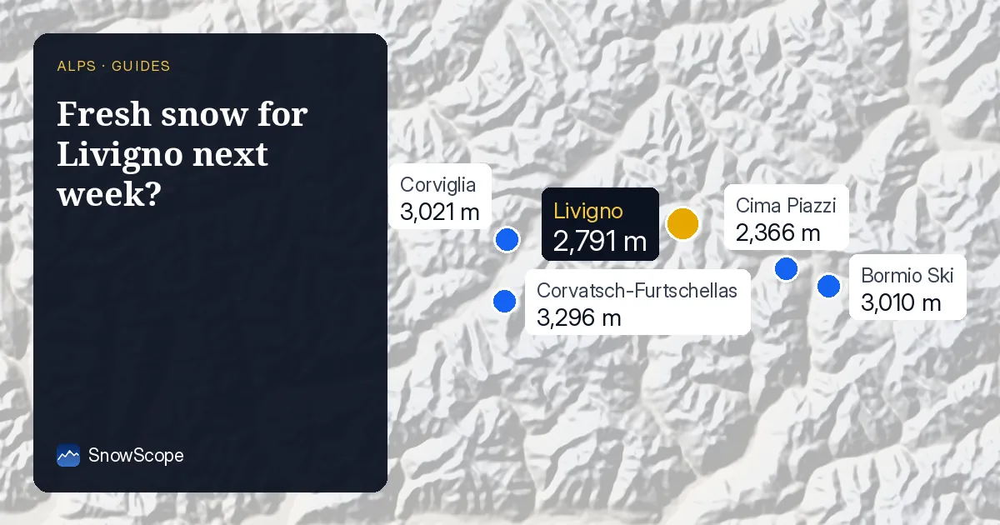

Fresh snow for Livigno next week? 6–31 cm up high (23–29 November 2026)
After a modest start this week (9 cm at the top from 17 to 20 November), Livigno lines up another round. Next week, 23 to 29 November, brings 19 cm up high in the middle of our forecast, anywhere from 6 to 31 cm, and 16 cm at the base.
See the live snow forecast for Livigno in the SnowScope appSnow depth, powder alerts and the 3D map, free.
Next week, height by height
Our forecast splits Livigno's week like this: upper slopes 19 cm (low 6, high 31), middle of the mountain 18 cm, lower runs 16 cm (low 6, high 26).
Most of the total arrives on Wednesday 25 (8 cm, up to 12) and Thursday 26 (7 cm, up to 13), counted at the top as the middle of our forecast and the high case.

How sure is this?
Reasonably, with a caveat. The snow is coming to Livigno, but the top could end up anywhere between 6 and 31 cm, and the middle value of 19 cm is only the halfway mark.
Book flexibly if you can: the picture for Livigno will be much sharper by the weekend.
Where the good snow will be
If you can pick one day, take the one that follows Wednesday 25 November, when 8 cm (up to 12 cm) has landed on the upper mountain.
Where to look in Livigno: whichever side of the valley the sun has not reached yet: Carosello in the morning shade, Mottolino later. The snow-sure top is Carosello 3000 and the Mottolino ridge; the part to treat with caution is the valley floor, which is high and cold.
How nearby resorts compare
At the top, next week, our forecast gives St. Moritz (24 km away) 19 cm, Davos (43 km away) 16 cm and Ischgl (52 km away) 18 cm, against 19 cm here.
Snow will not decide between these resorts next week. Height, aspect and which lifts are open will.
Village level: white or wet?
Good news for the lower runs: 16 cm is forecast at the base, close to the 19 cm up top, so cold air reaches the village and the snow should stay powdery right down the mountain.
Livigno is a high, dry valley: what falls usually stays light.
What 17–20 November leaves behind
Little lands in Livigno before the weekend: 9 cm at the top from Tuesday 17 to Friday 20 November. Most of what the resort gets this fortnight comes in the second week.
Tips for skiers
- Fresh snow on a young snowpack: read the regional avalanche bulletin (bollettino valanghe) before any off-piste plan.
- Opening dates are the resort's call; our numbers only say how much snow is coming.
- Plan around the top's 19 cm, and keep the high case of 31 cm as a bonus.
More maps (external sites)
About these numbers
Snow numbers: our two-week snow forecast issued on 16 November 2026, read at three heights of the resort (top, mid-mountain, base). Each total is the middle of a range, with a low and a high case. These are estimates for the slopes, not resort measurements, and forecasts move from day to day: check the live map before you go.
Cite this report
For research, teaching or the press: the numbers and charts are free to reuse under CC BY 4.0 with this citation.
SnowScope (2026), Fresh snow for Livigno next week? 6–31 cm up high (23–29 November 2026), https://snowscope.app/blog/en/2026/11/livigno-snow-forecast-next-week-23-29-november-2026.html, accessed 2026-11-16
SnowScope (Atlas Labs). (2026, November 16). Fresh snow for Livigno next week? 6–31 cm up high (23–29 November 2026). SnowScope snow reports. https://snowscope.app/blog/en/2026/11/livigno-snow-forecast-next-week-23-29-november-2026.html
BibTeX
@misc{snowscope2026livignosnowforecastnextw,
author = {{SnowScope (Atlas Labs)}},
title = {Fresh snow for Livigno next week? 6–31 cm up high (23–29 November 2026)},
year = {2026},
month = nov,
howpublished = {\url{https://snowscope.app/blog/en/2026/11/livigno-snow-forecast-next-week-23-29-november-2026.html}},
note = {Published 2026-11-16 11:50 UTC; accessed 2026-11-16}
}· CC BY 4.0 · Methods, data and tools →
Livigno: snow and temperature by height, this winter vs last (tools) →
Follow Livigno
Free: a message when fresh snow is coming, and the forecast every morning.
More snow reports

Ten European ski resorts ranked for December value, led by Les 2 Alpes with 75 cm of mid-mountain snow.

Montgenèvre has 56 cm of usual December snow at its base, giving weekend drivers deeper early cover than Sestriere across the border.

Mölltaler Gletscher December skiing: 66 cm at the 2103 m bottom lift and 128 cm mid-mountain on a typical 15 December; low-season 6-day pass EUR 332.